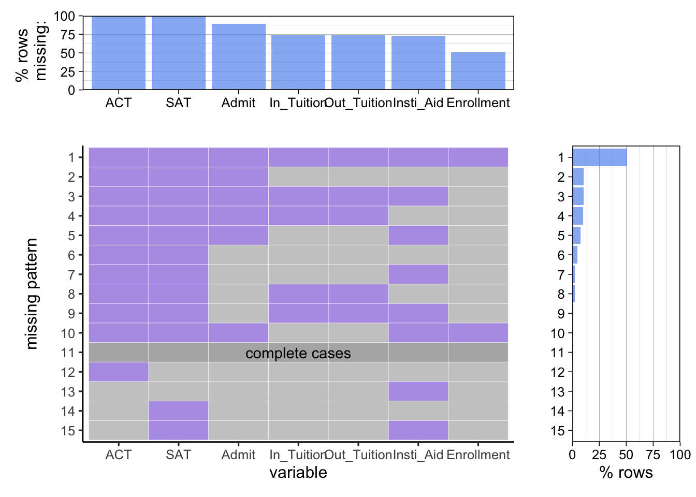
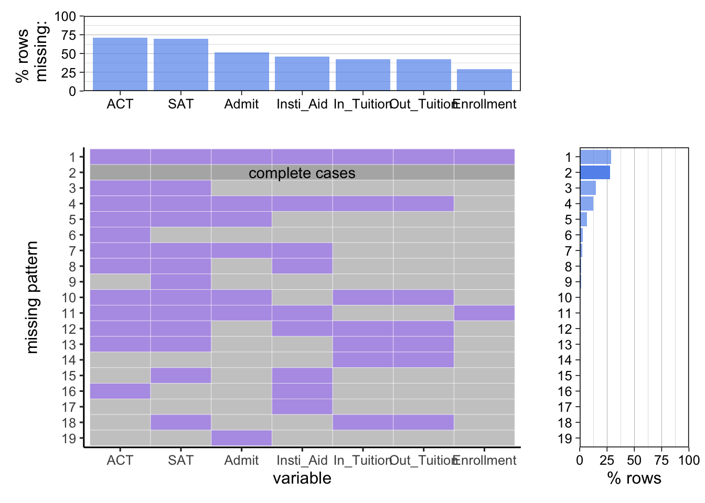
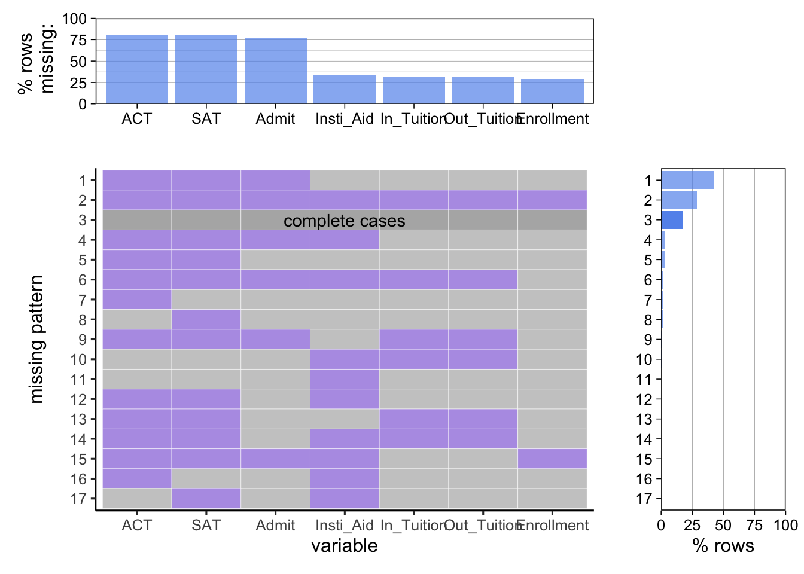

Chapter 3 Data
3.1 Sources
Our team sourced the data from the “National Center for Education Statistics”(NCES) maintained by the U.S. Institution of Education Science (IES) . The data link is :https://nces.ed.gov/ipeds/summarytables
The data set is dedicated to promote education transparency such that Students and their families are well informed of the cost and benefits of different higher education institutions and therefore are enabled to make better educational decisions.
The data collected from each institutions each year in the data set are all numeric entry. The data related to percentage are collected as float between 0 and 100. However, data regarding qualitative information of each school, such as location (state), institution type(private, public), school names, etc are provided as character, which enables our use of them as categorical variable.
The team assumed good data availability due to the fact that the data is collected by government fund agency. However, in the process of cleaning visualizing data, the team observe substantial amount of incomplete record included in the data set. The size of data frame shrunk significantly after the “na” values are dropped. Though the team observes meaningful pattern from remaining data, and the patterns observes in available should not loss generality due to central limit theorem, the story behind incomplete data is worth exploring.
Initially, the team planned to treat student earning as a crucial part of analysis. Nothing reflects education benefit better than student earning for most middle-class and lower-class people who seek social mobility from education. However, the earning data is not available from IPEDS. The team founds earning data from College score card (https://collegescorecard.ed.gov/), a database maintained by U.S. Department of Education who also uses IPEDS data to help college applicants visualize cost and gain of different institutions. However, only one year earning data is available, many of which are also “na”. The lack of available data compels team to explore other data patterns and analyze evolution of US education statics over the pandemics without focuing on cost-benefit analysis, which was the team’s original intention.
3.2 Cleaning / transformation
We processed admission related data in the “data_admission.R”.
For the institution type, we extracted the UNIT ID as a primary key to join the institution type with other data frames. We have three types of institutions, public, private nonprofit, and private for-profit. For the SAT score, after importation, we totally have five files, and each one stores the SAT score for one year. We first used NA to replace all NULL values and removed all rows with NA in each file. Then we use rbind() to bind five-year data into one data frame. Finally, we use inner_join() to join the SAT score and UNIT ID. For the admission information, we first removed one column with all NA values and then removed all rows with NA. Each observation has three features, type (application number or admission number), gender (total or woman or man), and year (2017-2021). Therefore, we first applied pivot_longer() to generate a 3-column data frame and then applied pivot_wider() to generate a 5-column data frame to take each feature as a separate column.
We process Student aid related data in the “Data_Student_Aid.R”
For university location, we use UNIT ID as primary key and find all unique combinations of UNIT ID and state. For student aid, after importation, we first rename columns to more descriptive names. We categorize the type of Institutional grant data into “Percent” (percent of students in a school receiving school aid) and average amount (average amount of aid received by students in a school.) We observe year entries, 2017 to 2021, are column titles. We use pivot longer to put year entries into a single column to clean the data.
We processed cost efficiency related data in the “data_earning&tuition.R”.
For QS ranking vs cost efficiency data, we first removed all the rows that have NA on mean earning in Most-Recent-Cohorts-Institution.csv and left-joined Most-Recent-Cohorts-Institution.csv onto top 25 QS ranking, then we used mutate() to create a cost-efficiency column calculated by earning / tuition. For Tuition over five years data, we removed the row with NA in the tuition column and pivot-longered the years to now column. Then we used group + mutate to generate mean tuition for different years. For tuition vs earning data, we first removed the row with NA in both the tuition column and the mean earning column, then we joined two the tuition data set and the Most-Recent-Cohorts-Institution.csv
We process Diversity related data in the “Data_Diversity.R”.
For both racial and gender diversity, we used pivot longer to move years from column time into a single column. We intend to use the choropleth map to visualize regional racial diversity. Thus we bin racial index (measurement of racial diversity between 0 and 1 )of each school to “High” and “Low” and use the ratio of “High” and “Low” school to categorize each state’s overall diversity. We intend to use a diverging stacked bar chart for male to female ratio of enrolled students, so we bin male to female ratio into 3 categories “female majority”, “neutral”, “male majority” to visualize gender demographics.
3.3 Missing value analysis
We process Missing value analysis with code available in the “Data_Missing_Value.R”. The code is also available in next R code chunk.
We essentially process Enrollment data(In this case we only concern with total enrollment for each school), SAT, ACT, Admission data, and student aid data in the same fashion described before. We then join a separate data frame regarding each attribute with University Id being the primary key. We then perform missing value plotting on the joined data frame directly on the joined data frame to observe missing value patterns.
We now run data processing code on missing value.
3.3.1 Missing value regarding Institutrional type
In our data set, the missing data are due to the fact that not every school would provide every piece of data the National Center for Education Statistics(NCES) requires. The team has visualized missing pattern for all types(public, non-profit private, and for-profit private) of schools from 2017 and 2021, but, beside a very slight raise on the percentage of data missing instances, no drastic change of pattern has been observed. The team than evaluated missing pattern for 3 types of institutions, where a conspicuous difference is observed.
Missing pattern for for profit private school:  The missing pattern for non-profit private schools:

The missing pattern for public school:  In all 3 plots, we see in popular missing patterns in each plot, SAT and ACT scores are usually both missing. The team initially assumed the missing value for SAT and ACT increases as over 2017-2021 since pandemics has compelled many institutions to adapt “No mandatory test score for application” policy. However, regardless of year and institution type, emitting both test scores data is always a popular pattern. Since test score of admitted students is an importance criterior of institutional competitiveness, it is likely non-competitive institutions prefer not to divulge the score of admitted students. This assumption is rejected since the team observes high variability in test score. The team eventually conclude that SAT and ACT score, unlike what many Chinese students like us used to believe as an imperative metrics for admission to US institutions, is not required by most US institutions and therefore is emitted in report from many institutions.
The team observes that the for-profit institutions have least variation in missing pattern. This is because the missing pattern where “no data is provided” is dominant with row missing percentage of 50%. Though we can’t conclude 50% institutions provide no data each year since data available from each institutions varies, 50% rate of “no data provided” is really astonishing. On average, only less than 5% institutions provide complete data each year. Given IPEDS is a survey by an NCES to monitor institutions receiving federal grand, which does not directly provide fund to for-profit private school, the team concludes the IPEDS data is not a good metric to evaluate for-profit schools whose fund is not provided by federal government due to apparently limited data availability from for-profit institutions.
The team observes that the non-profit institutions have roughly same percentage (around 25%) of incidences for “ALl data is provided” and “No data is provided”. Around 50% provides all datas except ACT and SAT score. Compare to for-profit private schools, non-profit private schools provide demonstrates higher data availability, making IPEDS a better data source to evaluate non-profit private schools than for-profit schools.
For public schools, though the percentage of complete data is lower than that of non-profit private school, the missing patterns shows that public schools are more likely to provide data relevant to life quality of admitted students, such as student aid, tuition, and enrollment, than private schools. More than 60% of times public schools would provide such information. The availability of data relevant to admitted students experience makes IPEDS data set a good data source to evaluate cost and benefit of public institution.
The main take away from the missing value analysis is that the relationship between data collector and data provider would impact availability of data. Since for-profit private schools generally do not reveive federal grant, they are not as obligated to provide data related to education benefit as public school and non-profit school that receives some government grant. Simply presuming quality of data collected by government institution is a naive heuristic to evaluate the quality of data.